8．非线性微分方程：定性理论
在希尔工作的刺激下，庞加莱为支配行星运动以及行星和卫星轨道稳定性的微分方程的周期解的研究开辟了一条新的途径。因为有关的方程是非线性的，所以庞加莱就从事于这类方程的研究。非线性常微分方程实际上在一些课题的开创期就出现了，例如在黎卡蒂方程（第21章第4节）中、在摆动方程中、在变分法的欧拉方程（第24章第2节）中。解非线性方程还没有找出普遍的方法。
由于运动方程，即使是三体的运动方程都不可能用已知函数明显地解出，所以稳定性问题就不可能通过考察解的性态而得到解决。于是庞加莱寻找通过考察微分方程本身就可以回答问题的方法。他把自己所创立的这个理论叫做微分方程的定性理论。这理论表述在四篇本质上是同一标题的论文《关于由微分方程确定的曲线的报告》（Mémoire sur les courbes définies par une équation différentielle）(50)里。用他自己的话说，他要寻求解答的问题是：“动点是否描出一闭曲线？它是否永远逗留在平面某一部分的内部？换句话说，并且用天文学的话来说，我们要问轨道是稳定的还是不稳定的？”
庞加莱从形为
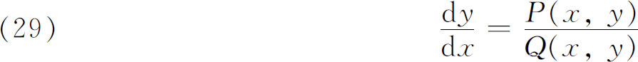
的非线性方程出发（其中P，Q对x，y是解析的），选择这个形式的部分原因是由于行星运动的某些问题，部分原因是由于它是庞加莱心目中开始研究的类型中最简单的数学类型。（29）的解有f（x，y）＝0的形式，而这方程就说是定义一个轨道系统。代替f（x，y）＝0，可以考虑参数形式x＝x（t），y＝y（t）。
在分析方程（29）的所有可能有的解的类型时，庞加莱发现微分方程的奇点（使P与Q同时为0的点）起着关键性作用。这些奇点在富克斯意义下是不确定的或是不规则的。这里，庞加莱继续布里奥和布凯（第5节）的早期工作，但使自己限于实值并宁可研究整个解的性质，而不只研究在奇点邻域内解的性质。他把奇点区分为四类，并阐述了解在这些点附近的性态。
第一类奇点是焦点，即图29.2中的原点，当t从-∞变向＋∞时，解环绕原点盘旋并趋向于原点。这种类型的解被看成是稳定的。第二类奇点是鞍点。它是图29.3中的原点，轨道趋近于这个点然后又离开它。两条分角线是轨道的渐近线。这种运动是不稳定的。第三类奇点叫结点，是无穷多个解相交叉的点。第四类奇点叫中心，有若干闭轨道围绕着它，一个闭轨道包含着另一个，并且都包含着中心。
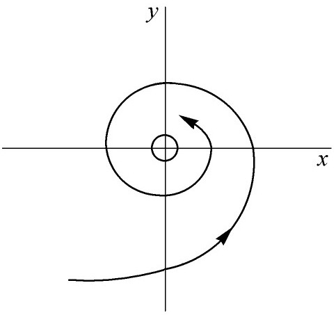 | 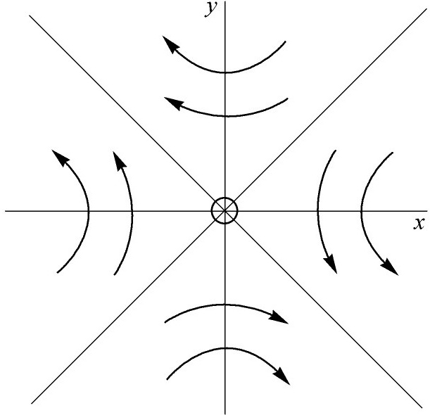 |
| 图29.2 | 图29.3 |
在许多结果中，庞加莱发现可能有一些闭曲线不与任何满足微分方程的曲线组相接触。他把这些闭曲线叫做无接触环。一条满足微分方程的曲线与这环的交点不能多于一个。因而，如果它跨过这环，则它就不可能再次跨过这环。如果这种曲线是一行星的轨迹，那么它就表示不稳定的运动。
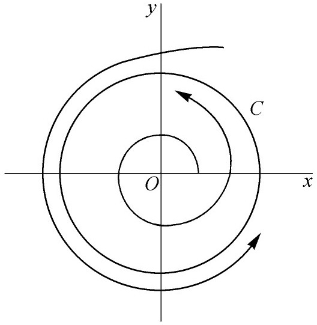
图29.4
除了无接触环外，还有一种庞加莱称之为极限环的闭曲线。它们是满足这微分方程的闭曲线，而且其他解渐近地趋向于它们，也就是永远达不到极限环。这种趋向可以是从极限环C之外，也可以是从极限环C之内（图29.4）。对某些（29）型的微分方程，庞加莱确定了其极限环和它们的存在区域。在极限环的情形下，轨道曲线趋向于一条周期曲线，所以运动仍然是稳定的。然而，如果运动方向是离开极限环的，那么在极限环外面的运动是不稳定的，而在环内的运动则是一条收缩螺线。
庞加莱在他关于这课题的第三篇论文中，研究了高次的和具有形状F（x，y，y′）＝0 （其中F是x，y，y′的多项式）的一阶方程。为了研究这些方程，把x，y，y′看作三直角坐标，并考虑由微分方程定义的曲面。如果这曲面有亏格0（球的形状），那么积分曲线有与一次微分方程情形相同的性质。对于其他亏格，关于积分曲线的结果可以很不相同。例如，对于一个环管就有许多新的情形发生。庞加莱没有完成这个研究。在（1886年的）第四篇论文里，他研究了二阶方程，并得到了某些类似于一阶方程所具有的结果。
庞加莱在继续进行关于微分方程（29）解的类型的工作同时，又考虑了一种针对天文学中三体问题的更普遍的理论。在一篇得奖的论文《论三体问题和动力学方程》（Sur le problème de trois corps et leséquations de la dynamique）(51)中，他考虑了微分方程组
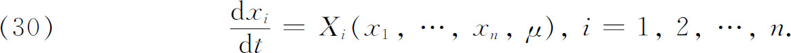
他用小参数μ的幂展开Xi，并假定这方程组对μ＝0有一个已知的以T为周期的周期解
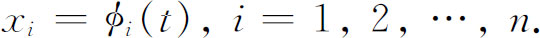
他企图找方程组的当μ＝0时归化为øi（t）的周期解。对三体问题，周期解的存在性已由希尔发现，而庞加莱则利用了这一事实。
在这里考虑庞加莱工作的细节是太专门化了。他首先推广了柯西关于常微分方程组的解的较早的工作，其中柯西已用了他的极限计算。然后，庞加莱证明了他所要寻找的周期解的存在性，并把他所学得的知识应用于三体问题周期解的研究，其中两个物体的质量（不是太阳的质量）都是很小的。于是，经假定这两个小质量物体围绕太阳在同一平面的两个同心圆上运动后，便得到这样的解。如果假定在μ＝0时轨道都是椭圆，并且它们的周期是可公度的，便可以得到其他的解。利用这些解，并利用他对方程组所建立的理论，他便得到其他的周期解。总结起来，他证明了有无穷多个初始位置和初始速度使得三星体相互间的距离是时间的周期函数（这样的解也叫做周期解）。
庞加莱在1890年的这篇论文中引用了关于方程组（30）的周期解和殆周期解的许多别的结论，其中包含有这种方程组的从前不知道的一类新的解这样非常卓越的发现。他把这些解叫做渐近解。共有两类。在第一类中，当t趋于-∞或t趋于＋∞时，这解渐近地趋于周期解。第二类解由二重渐近解组成，也就是当t趋于-∞和＋∞时，这种解趋于一周期解。这种二重渐近解有无穷多个。在1890年的这篇论文中所有的结果以及许多其他结果也可以在庞加莱的《天体力学的新方法》（Les Méthodes nouvelles de lamécanique céleste）(52)中找到。
庞加莱关于太阳系稳定性问题的工作仅仅是部分地成功了。稳定性仍然是一个未解决的问题。事实上，月球轨道是不是稳定的问题也是这样；今天大多数科学家认为它是不稳定的。
（29）的解的稳定性可以用所谓特征方程的方法来分析，所谓特征方程就是
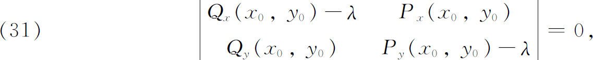
其中（x0，y0）是（29）的一个奇点。按照杰出的俄罗斯数学家李雅普诺夫（Alexander Liapounoff，1857—1918）的一个定理，在（x0，y0）的邻域内稳定性依赖于这个特征方程的根(53)。可能情形的分析是细致的，并包括比上面讨论的庞加莱的工作更多的类型。李雅普诺夫关于稳定性问题的工作一直继续到这世纪的早期。据李雅普诺夫说，基本结果是当且仅当方程（31）关于n的根都有负实部时，方程的所有解才是稳定的。
非线性方程的定性研究被庞加莱引进的拓扑论证法（在《数学杂志》上四篇论文的第一篇中）所推进。为了描述奇点的性质，他引进了指数的概念。考虑一奇点P0和围绕它的一条简单闭曲线C。在C与方程
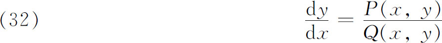
的解的每个交点上，有轨道的一个方向角，我们用ø表示，这个角可以取从0到2π弧度间的任何值。如果一个点依反时针方向沿C移动（图29.5），则角ø将要变化；而且当点C走完一圈以后，ø将有值2πI，其中I是一个整数或0（因为轨道的方向角已经转回到原来的值了）。量I就是曲线的指数。可以证明：包含几个奇点的闭曲线的指数是它们的指数的代数和。闭轨道的指数是＋1，反之亦然。
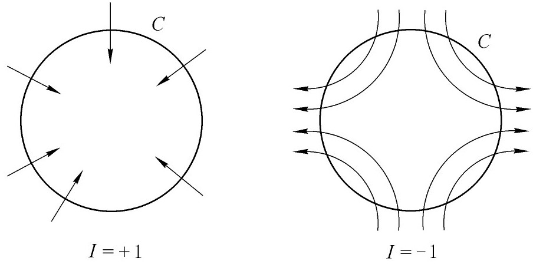
图29.5
轨道的性质可以由特征方程确定，因此，一条曲线的指数I应当仅仅知道微分方程就能确定了。可以证明
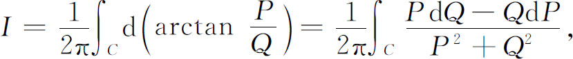
其中积分路径是闭曲线C。
庞加莱之后，关于形为（32）的方程的解的最有意义的工作是属于本迪克森（Ivar Bendixson，1861—1935）的。他的主要结果(54)之一是提供一个准则，据以可证明在某区域内没有闭轨道存在。若D是
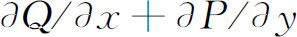
在其中同号的一个区域，则方程（32）在D中没有周期解。在本迪克森1901年的论文里，有现在以庞加莱和本迪克森命名的定理，它提供了（32）存在一个周期解的一个肯定判断准则。如果P与Q在-∞＜x，y＜∞内有定义并且是正则的，又如果当t趋于∞时，解x（t），y（t）永远保持在（x，y）平面的有界区域内且不趋于奇点，那么这微分方程至少存在一条闭的解曲线。
庞加莱创始的非线性方程的研究已在各个方面加宽变广了。这里要提一下在19世纪开始的又一个论题。富克斯研究过的线性微分方程的奇点都是固定的，而且事实上是被这微分方程的系数所确定了的。在非线性方程的情形下，奇点可能随初始条件而变动，因而称为可去奇点。例如方程y′＋y2＝0有一般解y＝1/（x-c），其中c是任意的。在解中，奇点的位置依赖于c的值。可去奇点的现象是由富克斯(55)发现的。可去奇点的研究和具有或不具有这种奇点的二阶非线性方程的研究被许多人作过，特别是被潘勒韦（Paul Painlevé，1863—1933）研究过。一个有趣的特征是对许多形如
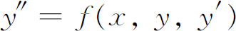
的二阶方程类，它们的解需要新的超越函数类，现在叫做潘勒韦超越函数(56)。对于非线性方程的兴趣在20世纪已经变得浓烈了。它的应用已从天文学转移到通信、服务机构、自动控制系统和电子学。它的研究也已从定性阶段转移到定量研究的阶段了。
参考书目
Acta Mathematica，Vol．38，1921．This entire volume is devoted to articles on Poincaré's work by various leading mathematicians．
Bôcher，M．：“Randwertaufgaben bei gewöhnlichen Differentialgleichungen，”Encyk．der Math． Wiss．，B．G．Teubner，1899-1916，Ⅱ，A7a，437-463．
Bôcher，M．：“Boundary Problems in One Dimension，”Internat．Cong．of Math．，Proc．，Cambridge，1912，1，163-195．
Burkhardt，H．：“Entwicklungen nach oscillirenden Functionen und Integration der Differential-gleichungen der mathematischen Physik，”Jahres．der Deut．Math．-Verein．，10，1908，1-1804．
Cauchy，A．L．：Œuvrescomplètes，（1），Vols．4，7，and 10，Gauthier-Villars，1884，1892，and 1897．
Craig，T．：“Some of the Developments in the Theory of Ordinary Differential Equations Between 1878 and 1893，”N．Y．Math．Soc．Bull．，2，1893，119-134．
Fuchs，Lazarus：Gesammelte mathematische Werke，3 vols．，1904-1909，Georg Olms （reprint），1970．
Heine，Eduard：Handbuch der Kugelfunktionen，2 vols．，1878-1881，Physica Verlag （reprint），1961．
Hilb，E．：“Lineare Differentialgleichungen im komplexen Gebiet，”Encyk．der Math．Wiss．，B． G．Teubner，1899-1916，Ⅱ，B5．
Hilb，E．：“Nichtlineare Differentialgleichungen，”Encyk．der Math．Wiss．，B．G．Teubner，1899-1916，Ⅱ，B6．
Hill，George W．：Collected Mathematical Works，4 vols．，1905，Johnson Reprint Corp．，1965．
Klein，Felix：Vorlesungen über die Entwicklung der Mathematikim 19．Jahrhundert，Vol．Ⅰ，Chelsea （reprint），1950．
Klein，Felix：Gesammelte mathematische Abhandlungen，Julius Springer，1923，Vol．3．
Painlevé，P．：“Le Problème moderne de l'intégration des équations différentielles，”Third Internat．Math．Cong．in Heidelberg，1904，86-99，B．G．Teubner，1905．
Painlevé，P．：“Gewöhnliche Differentialgleichungen，Existenz der Lösungen，”Encyk．der Math． Wiss．，B．G．Teubner，1899-1916，Ⅱ，A4a．
Poincaré，Henri：Œuvres，1，2，and 5，Gauthier-Villars，1928，1916，and 1960．
Riemann，Bernhard：Gesammelte mathematische Werke，2nd ed．，1892，Dover （reprint），1953．
Schlesinger，L．：“Bericht über die Entwickelung der Theorie der linearen Differentialgleichungen seit 1865，”Jahres．der Deut．Math．-Verein．，18，1909，133-266．
Wangerin，A．：“Theorie der Kugelfunktionen und der verwandten Funktionen，”Encyk．der Math．Wiss．，B．G．Teubner，1899-1916，Ⅱ，A10．
Wirtinger，W．：“Riemanns Vorlesungen über die hypergeometrische Reihe und ihre Bedeutung，”Third Internat．Math．Cong．in Heidelberg，1904，B．G．Teubner，1905，121-139．
————————————————————
(1) Abh．Konig．Akad．der Wiss．Berlin，1824，1-52，pub．1826＝Werke，1，84-109．
(2) 主要由隆梅尔（Eugen C．J．Lommel，1837—1899）在他的Studien über die Bessel'schen Functionen中做出的（1868）。
(3) Theorie der Bessel'schen Funktionen，1867，41 ．
(4) Math．Ann．，1，1869，467-501 ．
(5) Jour．für Math．，67，1867，310-314．
(6) Cambridge University Press，1944年第二版。
(7) Jour．für Math．，26，1843，185-216．
(8) 例如看霍布森的The Theory of Spherical and Ellipsoidal Harmonics，1931年，Chelsea（重印），1955。
(9) Comm．Soc．Sci．Gott．，2，1813＝Werke，3，123-162．
(10) Werke，3，207-230．
(11) Jour．de Math．，2，1837，147-183；4，1839，126-163．
(12) Jour．de Math．，10，1845，222-228．
(13) Jour．für Math．，29，1845，185-208．
(14) Jour．de Math．，（2），13，1868，137-203．
(15) Ann．de l'Ecole Norm．Sup．，（2），12，1883，47-88．
(16) Math．Ann．，1，1869，1-36．
(17) Comp．Rend．，58，1864，93-100和266-273＝Œuvres，2，293-308．
(18) Math．Ann．，16，1880，1-80．
(19) Jour．de Math．，1，1836，106-186与373-444．
(20) Jour．de Math．，1，1836，253-265；2，1837，16-35和418-436．
(21) Mém．des sav．étrangers，（2），1，1805，639-648．
(22) Astronom．Nach．，6，1828，333-348．
(23) Vol．1，1840，327ff．＝Œuvres，（2），11，399-465．
(24) Inst．Cal．Int．，1，1768，493．
(25) Bull．des Sci．Math．，（1），10，1876，149-159．
(26) Œuvres，（1），Vols．4-7和10。最重要的论文在Comptes Rendus的下列诸号上：Aug．5，Nov． 21，1839，June 29，Oct．26，Nov．2，和Nov．9，1840，June 20，July 4，1842。
(27) Comp．Rend．，39，1854，368-371 ．
(28) Jour．de Math．，（1），3，1838，561-614．
(29) Jour．de Math．，（4），6，1890，145-210；和（4），9，1893，217-271 ．
(30) 关于一阶微分方程组的不同的存在性证明，请看本章末尾书目中潘勒韦（Paul Painlevé）的第二本参考书。
(31) Comp．Rend．，15，1842，14-25＝Œuvres，（1），7，5-17．
(32) Math．Werke，1，75-85．
(33) Jour．für Math．，66，1866，121-160＝Math．Werke，1，159 ff．
(34) Jour．d'Ecole Poly．，（1），21，1856，85-132，133-198，199-254．
(35) 在黎曼那个时代，群的代数概念已经知道了。在本书第31章中将要介绍这一点。然而，这里需要知道的是，两个相继交换的作用仍是集里的一个变换，每个变换的逆仍属于这个集。
(36) Comp．Rend．，32，1851，458-461＝Œuvres，1，276-280．
(37) Werke，67-83．
(38) Werke，379-390．
(39) Jour．für Math．，66，1866，121-160；68，1868，354-385．
(40) Jour．für Math．，76，1874，214-235＝Ges．Abh．，1，84-105．
(41) Proc．Third Internat．Math．Cong．，1905，233-240；与Nachrichten König．Ges．der Wiss．zu Gött．，1905，307-388．还有在希尔伯特的Grundzüge einer allgemeinen Theorie der linearen Integralgleichungen，1912，Chelsea（重印），1953，81-108。
(42) Math．Ann．，60，1905，424-433．
(43) Jour．für Math．，75，1873，292-335＝Ges．Abh．，2，211-259．
(44) Acta Math．，1，1882，1-62与193-294＝Œuvres，2，108-168，169-257．
(45) 在关于富克斯型群的这一工作中，庞加莱使用了非欧几里得几何（第36章），并证明了富克斯型群的研究归结为罗巴切夫斯基几何的平移群的研究。
(46) Acta Math．，3，1883，49-92；4，1884，201-312＝Œuvres，2，258-299，300-401 ．
(47) 此文重印于Acta Math．，8，1886，1-36＝Coll．Math．Works，1，243-270。
(48) Amer．Jour．of Math．，1，1878，5-26，129-147，245-260＝Coll．Math．Works，1，284-335．
(49) Bull．Soc．Math．de France，13，1885，19-27；14，1886，77-90＝Œuvres，5，85-94，95-107．
(50) Jour．de Math．，（3），7，1881，375-422；8，1882，251-296；（4），1，1885，167-244；2，1886，151-217＝Œuvres，1，3-84，90-161，167-221 ．
(51) Acta Math．，13，1890，1-270＝Œuvres，7，262-479 ．
(52) Three volumes，1892-1899．
(53) Ann．Fac．Sci．de Toulouse，（2），9，1907，203-474；1892年最初在俄国发表。
(54) Acta Math．，24，1901，1-88．
(55) Sitzungsber．Akad．Wiss．zu Berlin，1884，699-710＝Werke，2，364 ff．
(56) Comp．Rend．，143，1906，1111-1117．